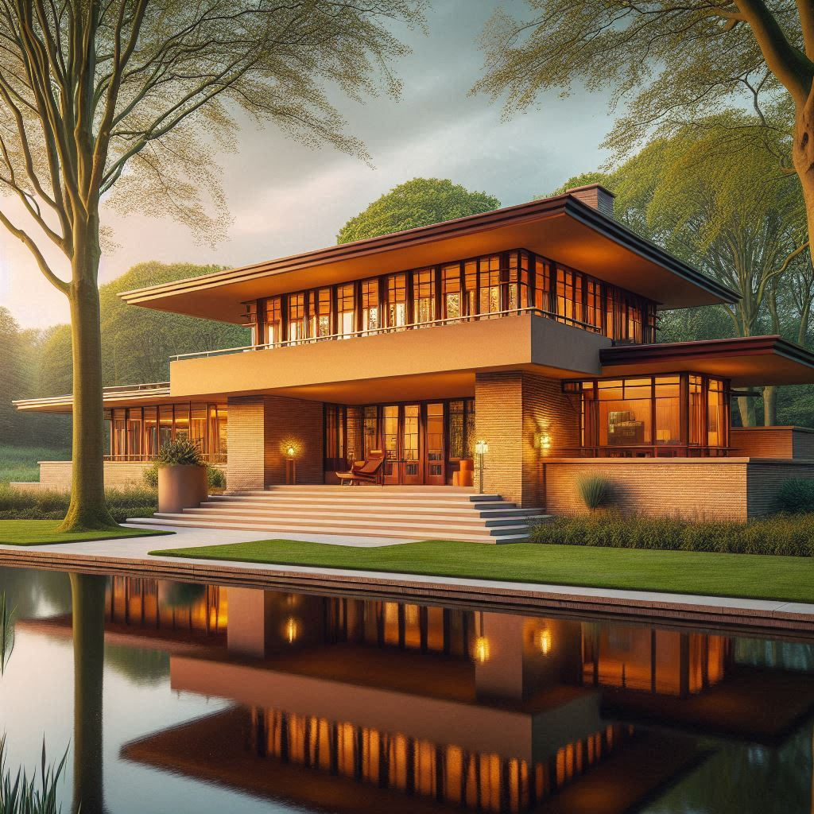

Natuurschoon
Bos, water en uitzicht op de villa van iemand die óók de ballotage heeft doorstaan. Herten grazen vrij. Postbezorgers worden vriendelijk tegengehouden bij de slagboom.

Exclusief · Besloten · Selectief
Op het snijvlak van exclusiviteit, uitsluiting en opvallend veel tuin ligt Landgoed Nietvooriedereen — voor wie hoort bij de enkelen die er thuishoren.
Het landgoed
Een buitengewoon woongebied voor mensen die graag buitengewoon wonen — en vooral: buitengewoon weinig buren zien.
Aan het water, omringd door een drie meter hoge beukenhaag, bouwt u samen met uw eigen aannemer (en onze ballotagecommissie) een woning in een stijl met allure op een royale kavel van minimaal 20.000 m². Want wie écht ruimtelijk wil wonen, telt geen vierkante meters — die telt buurmannen.
Bos, water en uitzicht op de villa van iemand die óók de ballotage heeft doorstaan. Herten grazen vrij. Postbezorgers worden vriendelijk tegengehouden bij de slagboom.
Vrijheid om te bouwen wat u wilt — mits het past binnen het 180 pagina's tellende beeldkwaliteitsplan, goedgekeurd door de Vereniging van Eigenaren en de rechterbuurman.
Met de auto zit u zo op de snelweg. Met het OV zit u zo nergens, want dat hebben we eruit gehouden. Dat bevordert de rust én de selectie. Zie ook de inrichting van de openbare ruimte.
Architectuur
Een duidelijke voorkeur voor horizontale lijnen, natuurlijke materialen en daken die verder uitsteken dan uw geduld met de buren.


Impressies. Werkelijke villa's kunnen afwijken — en zullen u afwijzen indien niet passend binnen het beeldkwaliteitsplan.
Kavels
Alle kavels zijn minimaal 20.000 m² en grenzen aan water, bos, of een ander soort discretie.
| Kavel | Oppervlakte | Ligging | Vanaf | Status |
|---|---|---|---|---|
| A · De Voorname | 22.500 m² | Aan het Beukenven | € 3.950.000 | Vergeven |
| B · De Afgeschermde | 28.000 m² | Bosrand, geen pad | € 4.275.000 | In ballotage |
| C · De Wij-Bekijken-U-Eerst | 34.000 m² | Bovenop de Hertenberg | Op aanvraag | Op uitnodiging |
| D · De Niet Voor U | 41.000 m² | Ergens daar | — | Echt niet |
| H · Het Hofje | 12 woningen | Rond de binnenhof | € 1.150.000 | In aanleg |
Woonrijp maken
Een wijk is pas af wanneer de laatste kraan verdwenen is. Wij hebben daar geen haast mee.
2,60meter rijbaan
De rijbaan is 2,60 meter breed. Dat is precies breed genoeg voor één grote auto, en precies te smal voor twee. Wie elkaar tegenkomt, moet achteruit — en daarmee is de weg hier niet zomaar een weg, maar een selectiemiddel dat zichzelf handhaaft.
De voorrangsregeling luidt als volgt: kavel A gaat voor kavel B, kavel B gaat voor kavel C, en wie op bezoek is rijdt achteruit tot aan de slagboom.
Het terrein is bouwrijp. Woonrijp maken wij zodra de laatste villa is opgeleverd. Aangezien kavel D niet wordt vergeven, blijft de bouwweg liggen — en daarmee de rust.
De wegen liggen op een tijdelijke onderlaag. De deklaag brengen wij aan wanneer de laatste kraan is vertrokken, hetgeen wij verwachten ergens tussen 2039 en nooit.
Niet aangelegd, en dat blijft zo. Duisternis is bij ons geen gebrek aan voorziening, maar een voorziening.
Voor de opvang van hemelwater. Twee staan het hele jaar droog; de derde staat vol, maar dan wel met beleid. Zij dragen namen: De Laagte, De Verdieping en Het Ongemak.
Bij extreme neerslag stroomt het water van uw kavel naar de wadi. Bij zeer extreme neerslag naar de kavel van uw buurman. Zo bevordert het ontwerp de onderlinge betrokkenheid.
Een gezamenlijke verantwoordelijkheid van de Vereniging van Eigenaren, hetgeen in de praktijk betekent dat het beheer van de wadi geen verantwoordelijkheid is.
Op eigen terrein, uit het zicht, en onder een overkapping met dezelfde daklijn als de villa. Bezoekersparkeerplaatsen zijn niet aangelegd: bezoek is een keuze, en keuzes hebben gevolgen.
Berekend op een terreinwagen met trailer, niet op een verhuiswagen. De bermen zijn halfverhard, zodat u met twee wielen kunt uitwijken. Doet u dat, dan ziet men het aan uw velgen. En men ziet het.
"De vuilniswagen komt tot de slagboom en niet verder. De conciërge rijdt de containers heen en weer. Dat is geen tekortkoming in het ontwerp; dat is de conciërge." — Technische commissie, notulen van de voorjaarsvergadering
Toelating
Toelating tot het landgoed is geen recht — het is een gunst, liefst erfelijk.
Nieuw · in aanleg
Twaalf kleine landhuizen rond een besloten binnenhof, voor bewoners die de tachtig naderen en de trap zijn gaan wantrouwen.
Het hofje werd al in 1902 gesticht door de weduwe van de generaal, die vond dat ook ouderen recht hebben op rust — mits het de juiste ouderen zijn. Zij legde de stichtingsakte vast, bepaalde de toelatingseisen, en overleed vervolgens in de veronderstelling dat de bouw spoedig zou aanvangen. Wij zijn verheugd te melden dat wij daar nu, honderddrieëntwintig jaar later, serieus werk van maken.
Wij spreken overigens niet van seniorenwoningen. Dat woord komt in ons beeldkwaliteitsplan niet voor. Wij spreken van de kleine landhuizen, en van bewoners in de tweede aanleg. Wie het woord "aanleunwoning" gebruikt tijdens het proefdiner, gebruikt het daarna niet meer.
"Wie hier binnentreedt, hebbe rust —
en hebbe zich tijdig ingeschreven."
Alle woningen zijn drempelloos uitgevoerd. De enige drempel bevindt zich, zoals altijd, bij de ballotagecommissie.
Er zijn geen trappen. Er is ook geen traplift: die klimt hoorbaar, en dat past niet bij de rust. Er is een helling, met allure.
Uw woning herkent uw stem, uw gewoonten en uw gang. Zij herkent ook wanneer die gang niet de uwe is, en meldt dat.
Uitsluitend voor scootmobielen in antraciet, mosgroen of gepatineerd messing. Rood is voorbehouden aan de brandweer.
Er is een zuster. Zij komt op dinsdag. De overige dagen is er de conciërge, die niet mag prikken maar wel uitstekend kan luisteren.
Toegestaan, mits de mantelzorger de ballotage doorstaat. Dit blijkt in de praktijk het voornaamste knelpunt.
Een besloten hof met lindeboom, zonnewijzer en bank. De bank biedt plaats aan drie; er wonen twaalf. Dat reguleert zichzelf.
Een koord naast het bed. Trekt u eenmaal, dan gaat er een bel in de conciërgeloge. Trekt u tweemaal, dan gaat er ook een bel bij de notaris.
18jaar wachttijd
De wachtlijst voor het hofje bedraagt achttien jaar. Wij adviseren u zich in te schrijven ruimschoots vóór uw pensioen — bij voorkeur rond uw veertigste, in goede gezondheid en met een vooruitziende blik. Wie zich pas op zijn zeventigste meldt, meldt zich in wezen aan voor de volgende generatie. Ook dat is een vorm van rentmeesterschap.
De achternaam dient bij voorkeur ouder te zijn dan u.
Aantoonbaar, en bij voorkeur van nature. De regentenkamer toetst dit tijdens een onaangekondigd bezoek.
Een referentie van een reeds overleden bewoner strekt nadrukkelijk tot aanbeveling. Wij hechten aan continuïteit.
"Wij wonen hier met z'n twaalven om één binnenhof. Dat klinkt gezellig, maar de haag in het midden is drie meter. Zo hoort het." — Mevr. Van Dalen-tot-Wolde-Groenewold, woning IV "Stille Wenk"
Voorzieningen
Zolang die hand tot de juiste familie behoort.
Een sfeervolle plek voor ontmoetingen van maximaal twee huishoudens tegelijk, op gepaste onderlinge distantie.
Spreekt uitsluitend Frans en knikt alleen naar wie hij herkent. Herten zijn bij naam bekend.
Zonder paarden. Dat bevordert de rust. Tevens tennisbaan, mits u de juiste tennisclub heeft.
Herkent uw auto, uw merk, en desgewenst uw status. Postbezorgers worden beleefd bij de slagboom afgewezen.
Eikenhouten lambrisering, 6.000 gelezen boeken, 40.000 ongelezen boeken. Stilte is gewaarborgd door gebrek aan bezoekers.
Voor uw sloep, uw zeilboot, of — wat wij het liefste zien — helemaal niets. Leegte heeft hier allure.
Daarna mag u zelf graven. Dat houdt de toevloed van thuiswerkende consultants binnen de perken.
Regelt vrijwel alles — behalve contact met de buren. Dat blijft een persoonlijke verantwoordelijkheid, liefst vermeden.
Bewoners aan het woord
"Alles is hier in de buurt, behalve andere mensen. Met de fiets bereikbaar — mits u een eigen fietspad aanlegt. Heerlijk." — Familie Van Dalen-tot-Wolde, kavel A
"Wij hebben ervoor gekozen om biobased te bouwen: uitsluitend met materialen waar niemand anders toegang toe heeft." — De heer en mevrouw Exclusief, kavel B
"Je hebt hier alle ruimte om zowel binnen als buiten te leven. En om mensen buiten te laten staan." — Anonieme bewoner, kavel C
Pers
Onafhankelijke oordelen van redacties die wij persoonlijk kennen.
"Landgoed Nietvooriedereen is wat u overhoudt als u álles heeft: een kavel, een hek, en het stille genoegen dat uw zwager níet in aanmerking komt."
"Een meesterlijk gecomponeerd stukje Nederland waar horizontale daklijnen en verticale statusindicatoren in perfecte harmonie samenkomen."
"De hoogte van de haag overtreft ieder vergelijkbaar landgoed in de Benelux. Hier wonen mensen die niet gezien willen worden — en dat lukt voortreffelijk."
"Zelden zagen wij een dwarsprofiel waarin zoveel sociale hiërarchie besloten ligt. De rijbaanbreedte alleen al verdient een vakprijs."
"Een hofje dat de barmhartigheid van de zeventiende eeuw combineert met het toelatingsbeleid van een golfclub. Wij kijken uit naar de oplevering in 2043."
Vragen
Onze commissie beantwoordt ze eenmalig, en daarna niet meer.
Nee.
De kinderen hebben 41.000 m² tot hun beschikking. Dat is de speeltuin.
Dat kunt u proberen. De commissie zal de koper vervolgens afwijzen, waarna u alsnog eigenaar bent. Heeft u verder nog vragen?
Ja, zeven. Alle zeven zijn tinten "bosbruin". De achtste kleur ("diep beukenbruin") is voorbehouden aan kavel A.
Zodra de laatste kavel bebouwd is. Kavel D wordt niet vergeven. Wij vertrouwen erop dat u de conclusie zelf durft te trekken.
Eenmaal. Daarna raden wij het af.
Nee. Een wadi is geen tuin. Een wadi is een standpunt.
Nee. Het hofje is af. Dat is nu juist het idee van een hofje.
Die keert terug aan het hofje. Uw kinderen ontvangen een condoleancebrief en, in dezelfde envelop, een afwijzing.
Eén nacht per kwartaal, maximaal twee tegelijk, en niet in de binnentuin.
Nee. Er is echter een conciërge die boodschappen doet bij een slager die niet op internet te vinden is.
Dan heeft het systeem gewerkt zoals bedoeld. Wij wensen u veel succes elders — er zijn ook heel charmante nieuwbouwwijken.
Wij beoordelen niets. Wij noteren slechts.
Rentmeesterschap
Een landgoed van deze allure vraagt om zorg voor volgende generaties — bij voorkeur uw eigen. Wij zijn CO₂-neutraal zolang er niemand komt, en biodivers zolang de hertjes blijven meewerken. Rewilding is geen trend, maar een uitstekend excuus om paden af te sluiten.
Geothermie onder elke villa. Zonnepanelen uitsluitend aan de boszijde, want opvallen is niet chic.
Eigen helofytenfilter. Regenwater wordt hergebruikt voor de haag — die drie meter wordt ze niet vanzelf.
Vierentwintig vlindersoorten, elf soorten vleermuizen, en één buurman die hier nooit meer weg wil.
Biobased en lokaal gezaagd. Het hout komt uit het eigen bos; het bos komt weer terug, met geduld.

Over ons
Het landgoed werd in 1887 gesticht door generaal b.d. jhr. dr. ir. Everhard van Dalen-tot-Wolde, een man van weinig woorden en opvallend veel land. Hij geloofde dat échte rust begint waar de openbare weg eindigt — en liet daar vervolgens een hek plaatsen.
Vier generaties later beheert de familie het landgoed nog altijd met dezelfde gezonde argwaan jegens nieuwkomers. Onze spreuk, Non Omnibus — "niet voor allen" — siert sinds 1902 het wapen, het briefpapier en, indien nodig, de ingangspoort. In datzelfde jaar stichtte de weduwe van de generaal het hofje. Over de volgorde bestaat binnen de familie nog altijd discussie.
"Een landgoed is geen vastgoedinvestering. Het is een belofte aan uw voorouders dat u hun selectie-inspanningen niet in de wind zult slaan." — Jhr. H. van Dalen-tot-Wolde, huidige rentmeester

Contact
Stuurt u ons gerust een bericht — dan bekijken wij uw aanvraag, uw achternaam, uw golfhandicap en de achternaam van uw grootouders. Hoort u binnen zes tot acht weken niets? Dan was het helaas niet voor u.